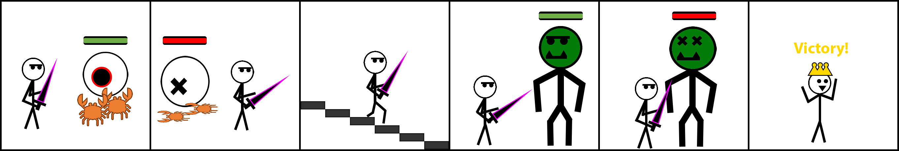

SEMESTER 2
This is a revised version of the work that I submitted for the second semester of the Introduction to Games Design module.
UI WIREFRAMES
Skills: UI Analysis / Design
For each UI wireframe, I took the base screenshot of the game, created a basic UI wireframe overlayed onto the screenshot, isolated the wireframe and then created a second, more detailed iteration.
DOOM (1993)


SPACE HULK
Terminator View Screen


Planning Screen


KINGDOM HEARTS III
Battle UI


Gigas Mech UI
This is the version of the UI from the Verum Rex: Beat of Lead minigame, and includes the score counter and timer.


PERIL WEAPON DIAGRAMS
Skills: Weapon Analysis / Design, Testing
TEAM FORTRESS 2 WEAPON DIAGRAMS
Team Fortress 2 has multiple different 'shot types', which the game uses to calculate damage in different ways:
- Hitscan - Projects the shot outward instantly, dealing damage to the first/any players in the projected line of fire
- Projectile - Creates a physical projectile in teh game that fires outward in the shot direction
- Particle - Each particle created deals damage to any player touching it
All weapons in the game have a chance to 'crit' the enemy, randomly increasing the damage output of the shot drastically (often 3x the normal damage).

MICRO KNIGHT MECHANICS DIAGRAMS
Skills: Gameplay Analysis / Design
Micro Knight is a rogue-lite dungeon-crawler prototype. For this task, I created a diagram for the game's flow, as well as 5 diagrams for the perks, extra abilities that are found in chests.
Game Flow Diagram
Perks Diagrams
To properly show off the magic axe's full functionality, I created an extra diagram showing the perk from a top-down perspective.
KINGDOM HEARTS II FINAL MIX DIAGRAMS
The game I chose to make mechanics diagrams for is KINGDOM HEARTS II FINAL MIX, basing it on the remastered version from KINGDOM HEARTS -HD I.5+II.5 ReMIX-. I chose to create ability diagrams, and also created one to explain the command menu (for the magic abilities).
The enemy and keyblade renders are taken from the KINGDOM HEARTS II Ultimania book and KINGDOM HEARTS III respectively. The PS4 controller inputs are taken from Persona 5 Royal.
Equiable Character Abilities
Guard
Quick Run

Dodge Roll
Command Menu Mechanics
Magic Abilities
Each magic ability in KINGDOM HEARTS II has 3 tiers, each being more effective / powerful than the last.
Cure / Cura / Curaga
Reflect / Reflera / Reflega
BUGS & TESTING
Skills: QA Testing
To learn about properly testing and reporting for bugs, I was given a broken version of the Micro Knight framework and tasked to find and report 10 different bugs.

BALANCE SIMULATION
Skills: GAME BALANCE AND TESTING | ENGINE: UNREAL ENGINE 4
This week, I was given the Balance Simulation tech demo and had to use the brute force analysis to get the simulation to run for 30 seconds, 50 seconds (both ±0.5s) and find a decent baseline that's not too short or long, then create balance graphs for two separate variables.
After opening the simulation and getting to grips with how it worked, I first tried to find a solution that took 30 seconds to end. I decided to focus in on brute force balancing one variable to make it a bit easier for myself, instead of spending a long time blindly changing values and not having a good idea on how they affect the simulation.
Because the base results took 13 seconds to end the simulation, I made the decision to try and decrease the turret reload speed, as it seemed like a lot of the ships weren’t being shot at. To start with, I changed the default 2.0s value to 1.0s. This proved to be way too much of a decrease as the ships were now never moving past their initial spawn point. After a minute had elapsed with no change, I decided to end the simulation and try and work through different values to see how this affected the time.
This showed that I would need to adjust more of the values than just one to get the desired result I was looking for, as the precision of the variables is only to 1 decimal place. Thus, I decided to go against my original judgement and just experiment with the different variables.
Because the spawn rate being decreased was getting me closer to the 30 seconds I needed to get, I decided to try and see if the current variables would get me there by just decreasing the spawn rate incrementally.
Because the value was now so close to the desired value, I wanted to try and tweak some of the other variables to hopefully get within the range (each change is sequential, i.e. the reload speed changes occurred with the final enemy speed value etc.)
30 Seconds Simulation
After this, I needed to change the stats to get 50s. Firstly, I decided to try decreasing the turret reload speed, and seeing how that affects the time value.
I decided to update the enemy HP to allow some more to go through, potentially getting the time to be at 50s, and then alter some of the other values to focus in on the time.
Because enemy speed being set to 0.7 was much closer to 50s, I reverted to those values and tweaked from there. I individually changed every value apart from the speed to see if it got me closer to 50s, however they were adjusting way too much.
Once I had gotten this far, progress had started to stagnate. I decided that because I seemed to be taking quite a while getting to 50s, I would just experiment with changing the different values instead of actually recording them, and I eventually landed on a setup that got me to 50s (±0.5). The approach of the stats layout is to have the turrets be slowly overwhelmed by ships, and have them become unable to stop some from coming through.
50 Seconds Simulation
Baseline Stats
For my baseline stats, I decided to aim for around 30 seconds, but have the values be much more "centered" and not have some of the variables be in the extremes (like the spawning in my 30 and 50 second simulations).
To make sure it was repeatable, I took 3 separate time values. After seeing they were all within a very close range to each other, I averaged them out to have a single time value.
Recorded Times: 31.666s, 31.656s, 31.655s
Average Time: 31.659s
The variables that I chose to change and graph from this baseline set are the Turret Reload Speed and Enemy Speed.
Turret Reload Speed Graph
Enemy Speed
For the enemy speed value of 0.1, I ultimately ended the simulation even though there was slight progress being made by the enemies. Because the length of time would make it virtually ungraphable, I left it as it was and just took the value as being higher than that of 0.2. Also because of the more extreme values at the lowest enemy speed values, I made two separate graphs with one excluding these values.
Back to Introduction to Games Design Page